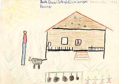

Pesta Tiwa in Sungai Paring
Vor ein paar Tagen sind wir nach Sungai Paring gefahren. Dort war ein Totenfest der Dayaks.Wir sind mit einem B.O. Boot gefahren. Als wir im Kampong ankamen, hatte die Musik gespielt. Es waren aber nur Urwaldtrommeln. Ein paar Männer haben E, e, e, e, e, e, e, e, e gesungen.
In der Zwischenzeit mußte der Bupatih mit einem Mandau einen Baumstamm durchhacken. Danach wurde viel getanzt. Die Mami und der Papi haben auch um die Kerbauköpfe getanzt. Dann habe ich auf dem Boot gespielt. Die Mami und der Papi sind dort geblieben und haben Reiswein getrunken.
Bevor wir heimgefahren sind, haben alle Leute vom Boot noch zu Abend gegessen. Die meisten aßen mit den Fingern.
Ab und zu bin ich wieder zu ihnen gelaufen. Der Manteri Paul und noch viele andere Leute waren mabok, weil sie zu viel Reiswein getrunken haben. Auch der Papi war mabok.
Ich habe es auch versucht. Auf der Heimfahrt habe ich in der Kabine ein bischen geschlafen (... und bisschen noch im Abitursaufsatz nach alter Rechtschreibung falsch geschrieben).
